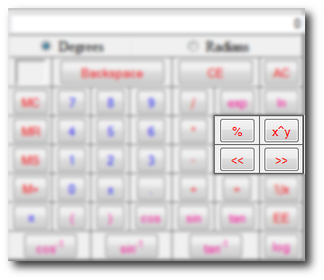

Now we discuss power functions.Look at the picture below for a list of the power function buttons:

The first power function we shall go over is most likely the hardest to comprehend.It is the X^Y function.Some may get confused as to how this works because when they click it what appears in the Display is "pow(".This is actually just setting you up to finish writing it.
Exampes of "pow()" functions:
x^y is the same thing as XY which is also the same as pow(x,y);
23=8 is the same as pow(2,3)=8
Putting it in a more complex equation is no problem either:
4(23+4)=48 which is like 4*(pow(2,3)+4)
Don't forget the a symbol goes between 2 algebraic functions like (8)*(8)
Also all parenthensis have to be closed in order for any function to work
Moving on...
After learning that understanding the rest is no problem.
sqrt takes the square route of the current Equation which is basically
pow(x,(1/2))
x^2 squares the current Equation pow(x,2)
and x^3 cubes the current Equation pow(x,3)